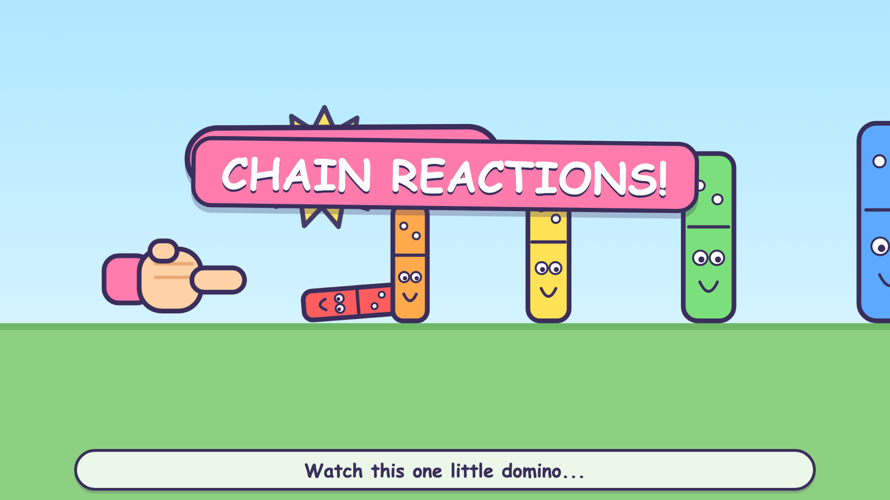
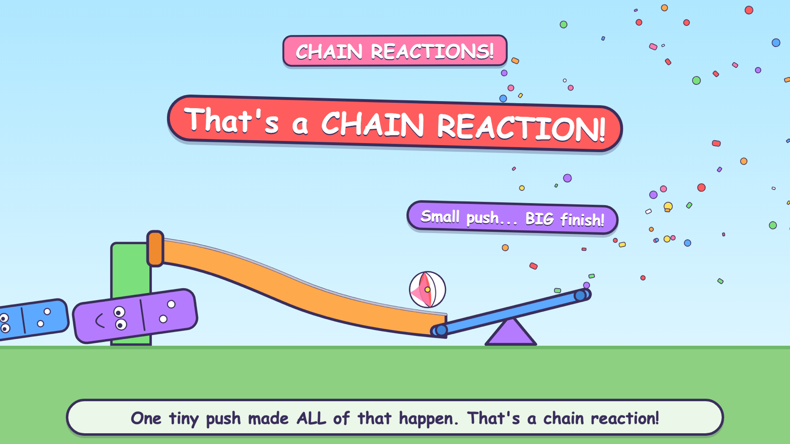

2026 · Motion
Domino Chain Reaction
A fifteen-second physics explainer for young children: a tiny domino topples a bigger one, which topples a bigger one, until the last knocks a ball down a slide onto a seesaw. There is no video editor in this project — every frame is a React component rendered by Remotion.
Designing for a five-year-old
- Faces on everything. The dominoes have eyes. It costs nothing and it turns a physics demo into characters falling over.
- Sound words as visuals. THUNK and ZOOM appear as comic bursts at the moment of impact, so the video reads with the sound off.
- One sentence at a time. A single caption bar at the bottom, never more than one line, replaced on each beat.
- Flat fills, heavy outlines. Thick navy strokes on saturated flats — legible on a phone at arm's length, which is where it will actually be watched.


Why code, not an editor
Timing is data. Every beat lives in a single timings file, so re-cutting the whole video to a different rhythm is one edit and one re-render, not a session of dragging keyframes. That matters when the same structure has to be reissued at different lengths.